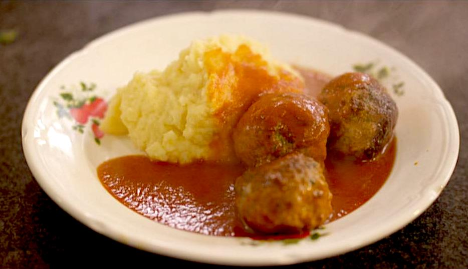

Balletjes in tomatensaus
Ingrediënten
- 500 gr varkensgehakt
- 250 gr kalfsgehakt
- 1 teentje knoflook
- 4 el bladpeterselie
- 2 eieren
- 40 gr paneermeel
- boter of olie om in te bakken
rundergehakt
1 kg frietaardappelen
3 uien
750 ml tomatenpassata
4el bloem
1 el komijn
nootmuskaat
Bereiding
- Verwarm de oven voor op 200°c. Snij de aardappelen in grove parten, leg op een bakplaat en besprenkel met olijfolie. Zet 35 minuten in de oven.
- pel en snipper de ui en de knoflook. stoof 1/3 van de ui aan in olie. Voeg de look, komijn en peterselie toe en schep om.
- Meng de verschillende soorten gehakt en voeg de gestoofde ui en look toe. Meng met de eieren en het paneermeel en kruid met nootmuskaat, peper en zout. Kneed goed door elkaar en rol er balletjes van. Wentel ze even door de bloem en bak ze kort goudbruin in boter.
- Stoof de rest van de ui aan, voeg de passata toe en laat op een zacht vuur even inkoken.
- Leg de balletjes in een vuurvaste schaal, schenk er de passata bij en leg er enkele vlokjes boter bij. Zet een kwartier in de oven bij de aardappelen. Bestrooi de ovenfrietjes met grof zeezout en serveer.
- Wijntip!
Tomaat en wijn zijn niet de beste vrienden. Wel goed is een fruitige jonge rode wijn, met een flinke portie zuur en gematigde tannines, die rond de 14°C mag geschonken worden.
Denk bijvoorbeeld aan een cru uit de Beaujolais, zoals de Juliénas 2012 van het Domaine de la Dîme (bij Spar Retail, € 7,99). Gevuld met sappig rood fruit, kers en aalbes, goed fris en met ingetogen tannines en een aangename lengte.